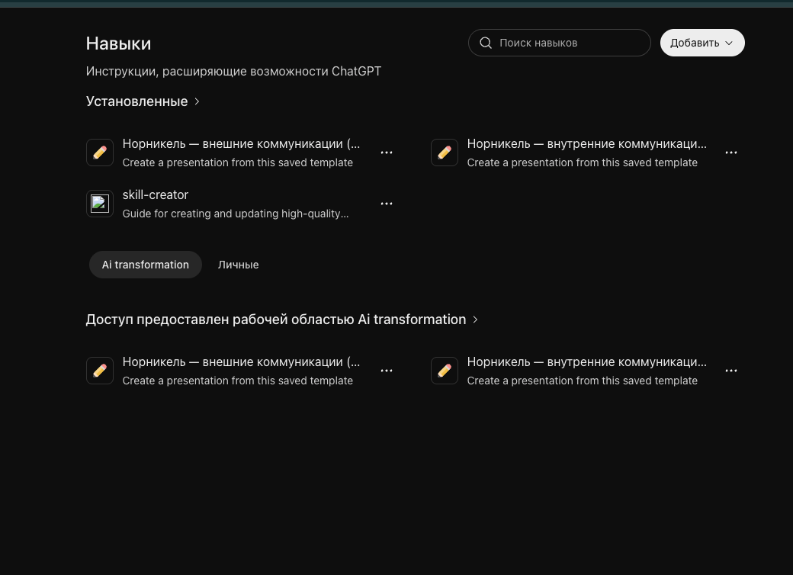
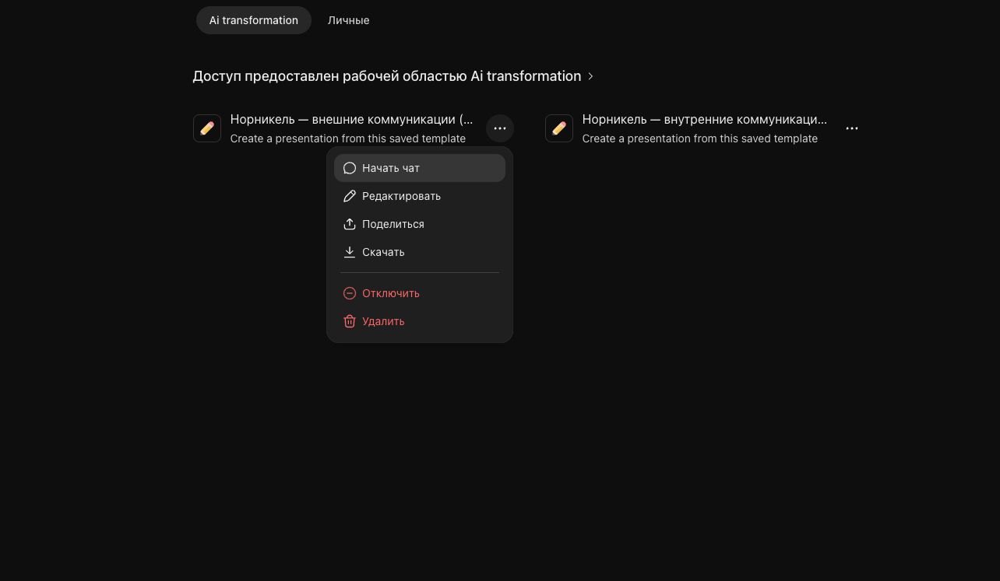
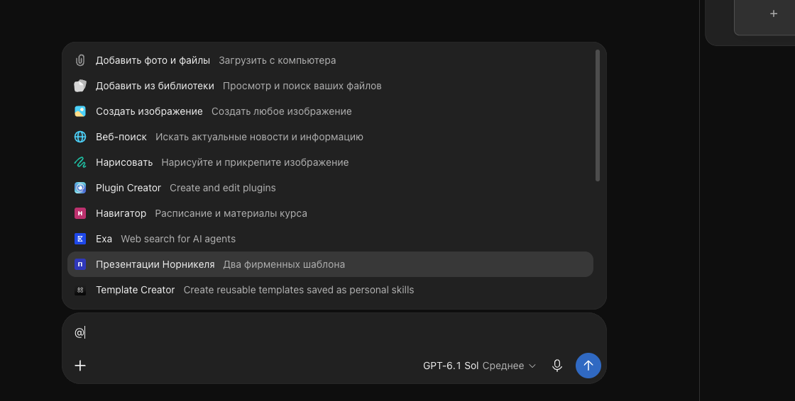
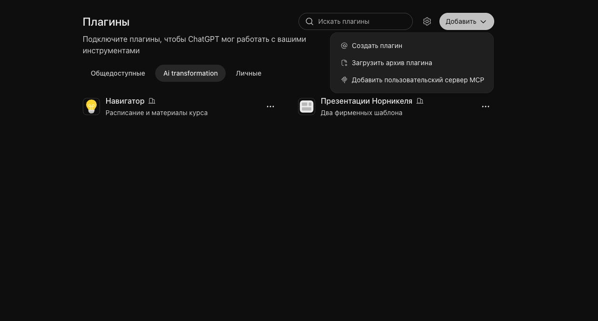
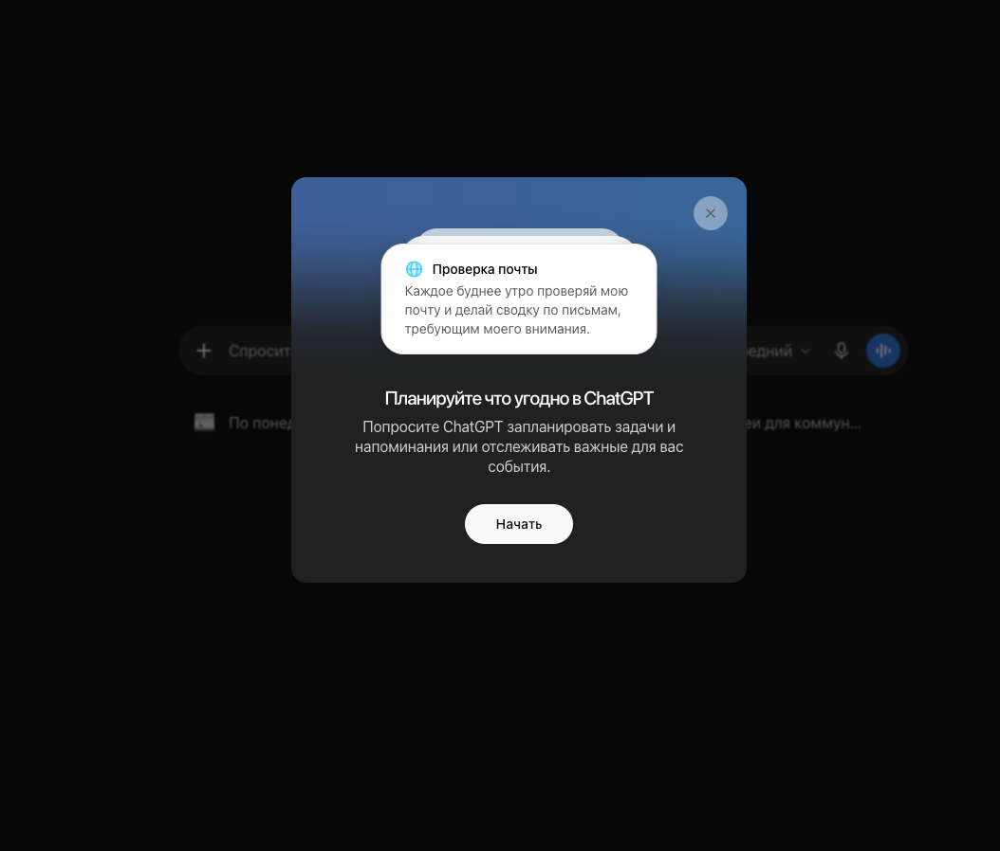

Четвёртая встреча · 6 ноября 2026 · 10:00–12:00 МСК
Из материалов в фирменную презентацию
Сначала все найдём готовые инструменты Норникеля и получим презентацию. Затем каждый создаст свой навык и соберёт из него учебный плагин. Работаем вместе: один шаг, одна кнопка, одна проверка.
Откройте «Загрузки». На Mac дважды нажмите ZIP; на Windows нажмите правой кнопкой → «Извлечь всё».
Найдите два рабочих файла: учебный-исходник.pdf и учебный-шаблон.pptx.
Оставьте урок в одной вкладке, ChatGPT Business в другой. Промпты отправляем по очереди, по команде преподавателя.
Проверка: PDF и PPTX видны в распакованной папке. В чат прикрепляем отдельные файлы, а не ZIP.
Что понадобится и когда
PDF с открытыми данными Норникеля используем в шагах 3 и 7. PPTX нужен на шаге 5 для создания собственного шаблона. Текстовые файлы содержат те же промпты и чек-лист, что и на странице.
Учебные данные уже опубликованы. Это практика по показателям 2025 года, а не новая новость компании.
Шаг 1 · все делаем одно и то же
Находим плагин «Презентации Норникеля»
Откройте Плагины.
Выберите вкладку AI transformation.
Найдите «Презентации Норникеля».
Откройте карточку: внутри должны быть два навыка — внешние и внутренние коммуникации.
Стоп-проверка: карточка открылась у каждого. Дальше не идём, пока её не увидели все.
Внутри два навыка. Если есть «Попробовать в чате», плагин можно вызвать.Не вижу плагин. Что нажать?
Проверьте название рабочей области в меню профиля: AI transformation. Затем вернитесь в Плагины → AI transformation и в поиске наберите «Презентации Норникеля». Обновите страницу один раз.
Если карточки нет, сообщите преподавателю. Публикацию и права проверяет владелец. Если карточка предлагает «Установить» или «Добавить», нажмите эту кнопку. Если уже есть «Попробовать в чате», повторная установка не нужна.
Шаг 2 · все делаем одно и то же
Проверяем два навыка Норникеля
Откройте Настроить → Навыки.
Выберите AI transformation.
Найдите навыки внешних и внутренних коммуникаций.
Откройте меню одного навыка: найдите «Начать чат», «Поделиться» и «Скачать».
Стоп-проверка: каждый видит оба навыка. Навык хранит шаблон и правила, плагин объединяет навыки в готовый процесс.

Оба навыка доступны рабочему пространству.

Навык можно открыть, передать или скачать.
Навык есть в рабочей области, но его нет среди установленных
Откройте карточку навыка. Если предлагается «Установить» или «Добавить», нажмите. Если в меню есть «Начать чат», попробуйте этот пункт. Названия и набор команд у владельца и обычного участника могут отличаться: для практики достаточно открыть чат с выбранным навыком. Редактировать общий навык не нужно.
Шаг 3 · быстрый результат · первые 40 минут
Все создаём одну презентацию
Откройте новый чат.
Введите @ и выберите «Презентации Норникеля».
Прикрепите файл «учебный-исходник.pdf» из комплекта.
Отправьте промпт 1. Ничего в нём не меняем.
Создать презентацию
Создай по шаблону «Внутренние коммуникации» учебную презентацию из 5 слайдов на основе прикреплённого материала. Сохрани фирменные цвета, логотип, пропорции, макеты и редактируемый формат PPTX. Используй только факты из приложенного файла. На последнем слайде укажи, что это учебный пример и он не предназначен для публикации. Перед выдачей проверь переполнение, обрезанный текст и читаемость заголовков.
Результат: в чате появился файл или страница с кнопкой «Открыть».
Где выбрать плагин в поле сообщения

Введите @ и выберите плагин. Через «Добавить фото и файлы» прикрепите учебный PDF.
До отправки: над полем виден PDF, в сообщении выбран плагин. После: откройте результат и посчитайте слайды. Нужен готовый PPTX из пяти слайдов, а не только текстовый план.
Получился только план или файл не открывается
В том же чате напишите: «Теперь создай сам редактируемый PPTX по этому плану, используя выбранный плагин». Если система не видит источник, заново прикрепите PDF. Если готовый файл не открывается в просмотрщике, скачайте его и откройте в PowerPoint.
Шаг 4 · все проверяем одинаково
Исправляем, скачиваем и передаём
Откройте презентацию и пролистайте пять слайдов.
Вернитесь в чат и отправьте промпт 2.
Скачайте обновлённый PPTX и откройте его.
Нажмите «Поделиться», пригласите коллегу. Коллега называет номер самого понятного слайда.
Сократить второй слайд
Сократи второй слайд до трёх коротких тезисов. Не меняй подтверждённые факты, фирменный шаблон и остальные слайды. Верни обновлённый редактируемый PPTX.
Результат: второй слайд стал короче, остальные не изменились.
Проверяем пять вещей
В презентации пять слайдов.
Заголовки читаются, текст не обрезан.
Числа, год и единицы совпадают с PDF.
На втором слайде три тезиса.
Есть пометка «Учебный пример».
Где поделиться и как проверить доступ
Откройте сам результат и найдите «Поделиться» справа вверху. Выберите коллегу в рабочем пространстве или скопируйте доступную ему ссылку. Попросите коллегу открыть её: отправленная ссылка ещё не означает выданный доступ.
Если вы делитесь из заголовка чата, проверяйте, не открываете ли всю переписку. Если для файла нет нужного способа совместной работы, скачайте PPTX и положите его в принятое в команде общее хранилище. Передайте коллеге ссылку оттуда.
Общий результат: у каждого есть открывающийся PPTX, одна выполненная правка и коллега с доступом.
Шаг 5 · все создаём один учебный навык
Сохраняем правила своей презентации
ШаблонКак выглядят слайды
НавыкКак выполнять одну работу: правила + образец + проверка
ПлагинПакет навыков и инструментов для повторяемого процесса
Сейчас у всех один тип: «Еженедельный обзор команды». На занятии меняем только своё имя. После занятия можно сделать вариант под отчёт, проект или выступление.
В новом чате вызовите @Template Creator.
Прикрепите «учебный-шаблон.pptx».
Отправьте промпт 3, заменив [ИМЯ] своим именем.
Откройте Навыки → Личные и найдите новый навык.
Сохранить повторяемые правила
Создай из прикреплённой презентации личный навык «Еженедельный обзор команды — [ИМЯ]». Сохраняй размеры слайдов, логотип, палитру, шрифтовую иерархию, сетку, отступы и типы макетов. Разрешай менять заголовки, основной текст, числа, фотографии и диаграммы. Не изменяй фирменные элементы и не добавляй неподтверждённые факты. Для еженедельного обзора используй структуру: итог недели, три подтверждённых результата, открытые вопросы, следующий шаг. Если данных нет, укажи пробел. Перед выдачей проверяй переполнение, обрезанный текст, контраст и единообразие заголовков.
Результат: новый навык виден в разделе «Личные».
Стоп-проверка: каждый показывает соседу карточку своего навыка. Если карточки нет, плагин пока не создаём.
После ответа навык не появился
Проверьте, что вызван именно Template Creator и загружен PPTX. Если ответ содержит кнопку «Установить», «Добавить» или «Сохранить», нажмите её. Затем откройте Настроить → Навыки → Личные. Текст «я создал навык» в чате ещё не проверка: нужна карточка в каталоге.
Откройте созданный навык и проверьте, что сохранены и образец PPTX, и ваши правила. Шаблон без правил пока хранит только оформление.
Шаг 6 · все собираем учебный плагин
Упаковываем навык в плагин
Откройте Навыки → Личные. У своего навыка нажмите ••• → Скачать. Найдите скачанный файл в «Загрузках».
Откройте Плагины → Добавить → Создать плагин. Дождитесь открытия конструктора или чата Plugin Creator.
Если открылся чат: прикрепите скачанный навык через + → Добавить фото и файлы и отправьте промпт 4. Если открылся конструктор: перенесите название и описание из промпта, а в разделе навыков добавьте скачанный навык.
В ответе конструктора найдите действие установки или сохранения и выполните его. Если получен только архив, скачайте его, затем откройте Плагины → Добавить → Загрузить архив плагина и выберите этот архив.
Вернитесь в Плагины → Личные. Откройте свою карточку и проверьте наличие навыка внутри.
Создать плагин или загрузить архив нельзя
Это может быть ограничение роли в рабочем пространстве. Преподаватель показывает этот шаг на своём экране; участник сохраняет личный навык и описание плагина. Для установки готового плагина потребуется владелец или администратор с соответствующими правами.
Собрать рабочий процесс
Создай личный плагин «Мои презентации — [ИМЯ]». В прикреплённом файле мой навык «Еженедельный обзор команды — [ИМЯ]». Включи его целиком, вместе с образцом и справочными файлами. Если вложение недоступно, попроси прикрепить его заново. Плагин должен принимать исходный документ, сначала определять аудиторию и задачу, затем создавать презентацию по моему навыку. Факты брать только из файлов пользователя. Перед выдачей проверять переполнение, обрезанный текст, единообразие заголовков и возвращать редактируемый PPTX. Ничего не публиковать и не отправлять коллегам без подтверждения.
Результат: личный плагин появился в списке и внутри виден навык.

Плагины → Добавить → Создать плагин.
Шаг 7 · общий финальный тест
Проверяем собственный плагин
Нажмите «Попробовать в чате» или вызовите свой плагин через @.
Прикрепите учебный исходник.
Отправьте промпт 5.
Проверьте: применён ли навык, сохранился ли стиль, редактируется ли PPTX.
Проверить свой плагин
Создай по прикреплённому материалу учебную презентацию из 3 слайдов, используя мой навык. Покажи: 1) задачу и аудиторию, 2) три главных факта, 3) следующий шаг. Не добавляй факты извне. Верни редактируемый PPTX и коротко перечисли, что проверил перед выдачей.
Результат: три слайда в нужном стиле и редактируемый файл.
Основной урок завершён: каждый увидел инструменты команды, получил фирменную презентацию, создал собственный навык и собрал из него личный плагин.
После основного результата · смотрим вместе
Веб и приложение: продолжаем одну работу
В браузере запомните название созданного чата.
Откройте приложение ChatGPT на компьютере и выберите ту же учётную запись и рабочее пространство.
Найдите чат по названию. Проверьте наличие сообщений и результата.
Если приложение ещё не установлено, наблюдайте демонстрацию преподавателя. Установку можно выполнить после занятия.
Веб удобен для быстрого старта без установки. Приложение удобнее для работы с локальными папками и, при наличии соответствующего доступа, инструментами компьютера. Готовый PPTX можно скачать и открыть в PowerPoint из обоих интерфейсов.
Проверка: вы узнаёте свой чат и знаете, где лежит итоговый PPTX. Для прямой правки текста и расположения элементов откройте файл в PowerPoint; в чате изменения задаём словами.
Бонус 1 · только после общего результата
Codex и дополнительные навыки презентаций
Все пробуем один навык: Slide Wright. Он сначала делает два пробных слайда, затем собирает веб-презентацию. Это отдельная ветка для эксперимента с подачей; фирменный PPTX из основного урока уже сохранён.
Откройте Codex и новый чат.
Отправьте промпт 7 с адресом GitHub. Дождитесь установки.
Начните следующий ход и отправьте промпт 8. Прикрепите учебный PDF.
Откройте два пробных слайда. Если направление подходит, напишите: «Подтверждаю. Собери все пять слайдов».
Откройте итоговый HTML в браузере. Переключите слайды стрелками.
Установить один навык
Используй skill-installer. Проверь репозиторий https://github.com/arifszn/slide-wright и установи навык slide-wright из подходящей папки со SKILL.md. Перед установкой прочитай инструкции и проверь зависимости. Если навык уже установлен, используй его без перезаписи. Сообщи, как вызвать навык и какие дополнительные зависимости нужны для HTML, PDF и PowerPoint.
Проверка: Codex подтвердил установку и сообщил название навыка.
Получить два пробных слайда
Используй slide-wright. По прикреплённому учебному PDF подготовь презентацию из пяти слайдов для внутреннего обзора команды. Сначала покажи два пробных слайда и дождись моего подтверждения. Все факты бери только из PDF, сохраняй год и единицы. Пометь результат «Учебный пример». Сохрани итог как HTML, открывающийся в браузере.
Проверка: появились два пробных слайда, затем после подтверждения полный HTML.
Как посмотреть навык на GitHub и скачать вручную
Откройте ссылку Slide Wright ниже.
Найдите файл SKILL.md: в нём описано поведение навыка. Прочитайте README и требования к установке.
Для скачивания копии нажмите Code → Download ZIP и распакуйте архив.
Не загружайте целый репозиторий как плагин ChatGPT. Передайте Codex путь к распакованной папке и попросите установить именно папку навыка вместе с её references и scripts.
Скачивание ZIP само по себе не устанавливает навык. Для урока проще пользоваться промптом 7.
Другие варианты из коллекции Иры и GitHub для самостоятельного изучения:
В ответе найдите подтверждение создания задачи. Сверьте завтрашнюю дату, 10:00 и московский часовой пояс.
Откройте Scheduled / Запланировано в боковой панели. Если пункт не виден, в веб-версии откройте chatgpt.com/scheduled.
Нажмите название задачи и проверьте текст и ближайший запуск. Найдите управление расписанием и статусом.
Если есть «Run now / Запустить сейчас», выполните тест. После проверки учебную задачу можно приостановить.
Вернуться к проверке
Завтра в 10:00 по московскому времени вернись в этот чат и напомни мне проверить созданную презентацию перед отправкой. Покажи короткий чек-лист: факты, заголовки, переполнение слайдов, подписи к графикам, конфиденциальные данные и имя файла. Ничего не отправляй коллегам самостоятельно.
При первом запуске появилось окно знакомства

Нажмите «Начать», затем создайте задачу своим запросом.Задача не появилась или расписание не загрузилось
Ответ обычным текстом «напомню» не подтверждает создание. В том же чате попросите: «Создай именно задачу по расписанию и покажи дату следующего запуска». Если раздел Scheduled выдаёт ошибку, обновите страницу и откройте его отдельно. Если функция недоступна в рабочем аккаунте, преподаватель показывает демонстрацию.
Для проверки не нужны подключённая почта, локальные файлы и отправка сообщений коллегам. Это личное напоминание с чек-листом.
Результат бонуса: задача видна в Scheduled, время правильное, самостоятельная отправка запрещена.